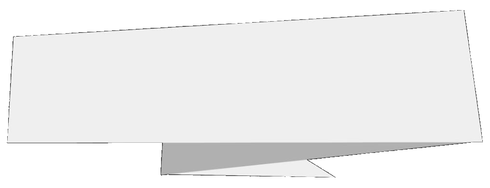
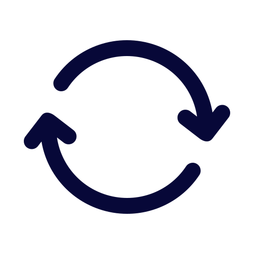
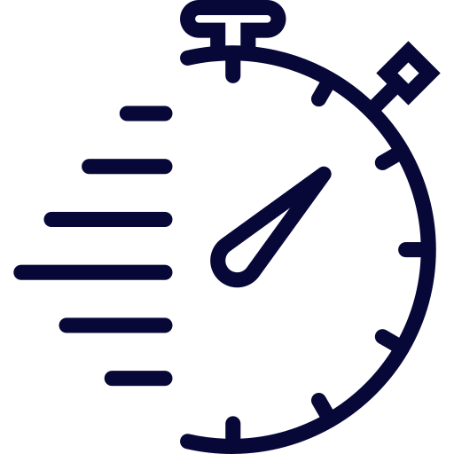

<ion-content [fullscreen]="true">
  <div class="container ion-text-center">
    
    <div class="categoryText" >{{currentCategory}}</div>
    
  </div>
  <div class="midContent">
    <div class="timerBtnDiv">
      <button (click)="clearTimer()" class="round-6">
        
      </button>
    </div>
    <div class="timerLblCount">
      <span class="timerText" [ngStyle]="{'color': timerReachedEnd ? 'red' : '#ffffff'}"><span id="watchSeconds">00</span>:<span id="watchTens">00</span></span>
    </div>

    <ion-content class="ion-padding">
 
    </ion-content>
    
  </div>
</ion-content>
